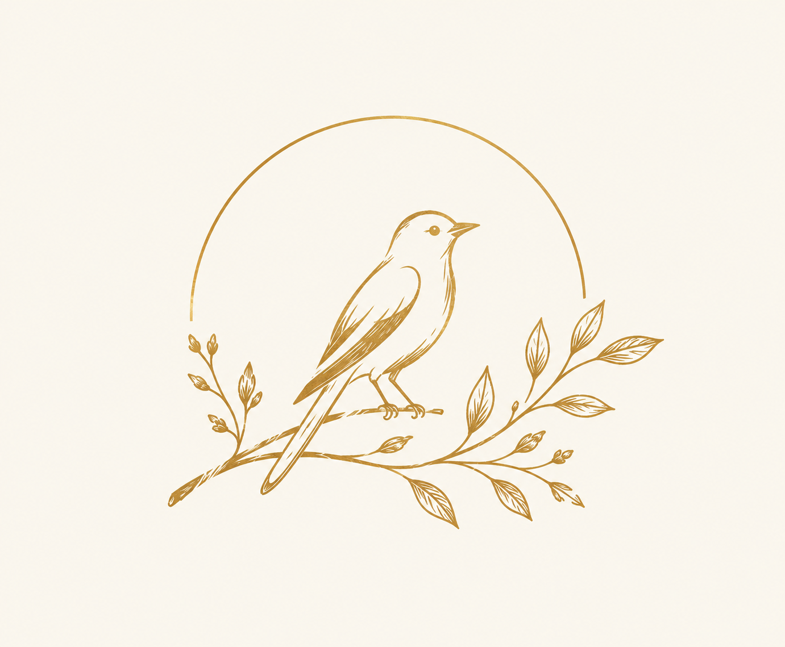

The little oriole behind Oriole Breeze.

Somewhere between the trees, the flowers, and the gentle movement of the breeze, there is a little golden bird.
His name is Bobo.
He may be small, but he carries a little bit of the spirit behind Oriole Breeze — curious, free-spirited, and always drawn towards something new.
The oriole became part of our story because of what it represents: nature, movement, colour, and a sense of freedom. It felt like the perfect little companion for a fragrance house inspired by the natural world.
And then came Bobo.
With his warm golden feathers and unmistakable presence, he became more than just a symbol. He became the little character who watches over our fragrances, travels through our pages, and quietly reminds us where Oriole Breeze began.
He doesn't belong to one particular fragrance.
He belongs to all of them.
From a soft vanilla to a fresh morning scent, from delicate florals to deeper woods, Bobo is there to accompany every little journey.
So whenever you see that golden bird...
you'll know it's Bobo.
Welcome to his world.
Back to Oriole Breeze